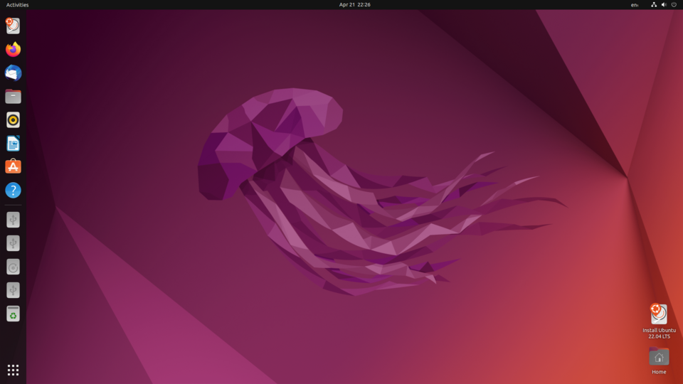

Aplicativos padrão redefinidos automaticamente
O problema
Depois de uma atualização, o sistema operacional volta a abrir os arquivos PDF no Edge, os links em outro navegador ou as fotos em outro programa, mesmo que o usuário já tenha escolhido os seus aplicativos padrão (os programas que o sistema usa automaticamente para abrir cada tipo de arquivo). No Windows, isso costuma vir acompanhado do aviso "Um aplicativo padrão foi redefinido".
Possíveis causas
Algumas atualizações redefinem a associação de arquivos (a ligação entre uma extensão, como .pdf, e o programa que a abre) quando consideram a configuração inválida. Também acontece de um programa recém-instalado ou atualizado registrar-se como padrão sem pedir permissão.

Solução no Windows
Abra Configurações > Aplicativos > Aplicativos padrão e procure o programa desejado, como o Chrome ou o Adobe Reader. Clique nele e use o botão Definir padrão, se aparecer, ou escolha o programa em cada extensão da lista (por exemplo .pdf, .html, HTTP e HTTPS).
Outra forma é pelo próprio arquivo: clique com o botão direito em um arquivo do tipo que mudou, escolha Abrir com > Escolher outro aplicativo, selecione o programa certo e clique em Sempre.
Se a associação voltar a mudar a cada atualização, mantenha o programa atualizado e, se continuar, desinstale e reinstale-o pelo site oficial, para que ele registre novamente as associações no sistema.
Solução no Linux
No Ubuntu, os aplicativos padrão de navegador, e-mail, música, vídeo e fotos ficam em Configurações > Aplicativos > Aplicativos padrão. Para outras extensões, clique com o botão direito no arquivo, escolha Abrir com outro aplicativo, selecione o programa e marque Sempre usar para este tipo de arquivo.
Pelo terminal, o comando xdg-mime query default application/pdf mostra qual programa abre os
PDFs, e xdg-mime default org.gnome.Evince.desktop application/pdf define um novo padrão. As
escolhas ficam gravadas no arquivo ~/.config/mimeapps.list.
Saiba mais
Pesquise um dos tutoriais em vídeo abaixo: